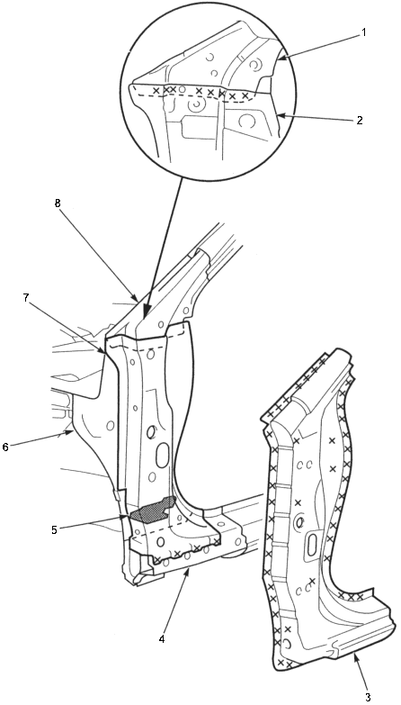

Front Pillar Outer Panel
Removal
3-49
Cut the wheelhouse upper member as necessary pry off the front pillar outer panel.
Check the front pillar lower stiffener position and for damage and replace it if necessary.
When replacing the front pillar lower stiffener, remove the front pillar separator and glue the insulator at the separator mounted position.

FRONT PILLAR UPPER STIFFENER
FRONT PILLAR LOWER STIFFENER
OUTER PANEL
SIDE SILL REINFORCEMENT
FRONT PILLAR SEPARATOR
INNER LOWER
FRONT PILLAR LOWER STIFFENER
FRONT PILLAR UPPER STIFFENER